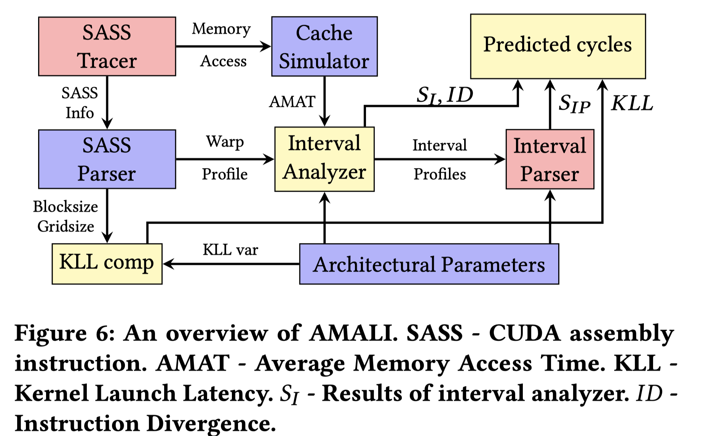

AMALI

Abstract
GPU 的性能评估可以分为两类： - cycle-accurate simulators - 提供cycle量级的仿真，但是很慢，很复杂，因此也难以进行对结果进行分析。 - analytical models - 速度快但精度下降，能够建立cycles-per-instruction结果，便于分析架构的瓶颈
但是analytical models目前仍然非常不准确，有以下两个方面的原因： 1. 当前没有考虑tensor cores, immediate constant cache, instruction caches等新的GPU特性 2. 没有考虑LLM在推理的特性
因此AMALI提出
- 提出了Tensor Core model，用以精确捕捉的由于dtype和size不同导致的不同延迟
- 对kernel lannch 的延迟进行了建模，这些延迟可能是由immediate constant cache misses and instruction cache misses导致
- 对LLM推理时涉及的warp级指令进行了建模